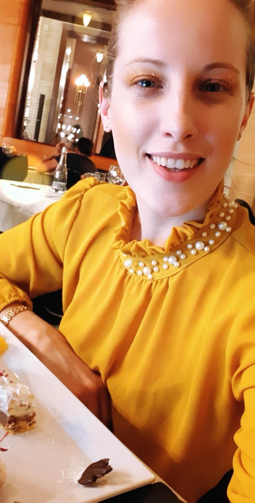

Europass
Marina Medelete

Nationality: Romanian
Date of birth: 21/03/1992
Gender: Female
Phone number:+40756614642
Email address:mede.wildcarpathia@gmail.com
Address:Ion Luca Caragiale, Nr.6, Arad, Romania
WORK EXPERIENCE
Activity facilitator
Asociația Wild Carpathia [ 01/11/2015 – Current]
City: Sighisoara; Brasov
Country: Romania
- Monitoring the learning process and providing informational support to the association's volunteers
- The delivery of thematic trainings in the development of the personal development of the beneficiaries of the projects
- Maintaining permanent and effective communication with members, volunteers, collaborators, and projectbeneficiaries
- Direct involvement in the associated activities by providing the resources necessary to achieve the objectives
- Preparation of documents and their archiving
- Facilitating the integration within the Wild Carpathia association and the community of foreign volunteers
Mentor
Asociația Wild Carpathia [01/11/2014 – 31/07/2020]
City: Sighisoara; Brasov
Country: Romania
- Initial assessment with the volunteer of learning needs
- Drawing up progress sheets with personalized recommendations for each volunteer
- Facilitating learning, providing learning resources
- Actively listening to the volunteer and identifying effective solutions to their challenges
- Involvement in the mediation of conflicts, with the agreement and after notifying the coordinating association
- Motivating volunteers for activities, for personal and professional development
- Active involvement in the analysis of the volunteer's knowledge, skills, and attitudes acquired during theinternship in order to complete the Youthpass certificate together with the Host Organization and the volunteer.
Volunteer
Fundația World Vision [ 2004 – 2012 ]
City: Sighisoara; Brasov
Country: Romania
- Participation in various courses and events
- Implementation of fundraising campaigns
- Organizing team-building sessions for the foundation's volunteers
- Presentation and organization of celebration events
Vice-president
Asociația Centrul de Voluntariat Sighișoara [ 2015 – Current ]
City: Sighisoara
Country: Romania
EDUCATION AND TRAINING
Certificat lider AWARD România
Fundația The Duke of Edinburgh's AWARD International [ 01/05/2016 – 16/08/2017 ]
City: Sighisoara
Country: Romania
Certificat Youthpass - mentor in European Voluntary Service projects
Agenția Națională pentru Programe Comunitare în Domeniul Educației și Formării Profesionale [
15/12/2015 – 22/12/2015 ]
City: Mollina
Country: Spain
Involvement as a mentor in 8 projects carried out within the European Voluntary Service, financed by the Commission European through the Erasmus+ program.
Bachelor's Degree
Facultatea de Drept și Științe Administrative Craiova [ 01/10/2011 – 31/07/2015 ]
City:Craiova
Country: Romania
LANGUAGE SKILLS
Mother tongue(s): Romanian
DIGITAL SKILLS
- Zoom
- Creating and keeping deadlines
- Overseeing an organization's various social media platforms
- Developing social media campaigns
- Creating video content for various platforms
- Collaborating with stakeholders and teams
- Organizational and planning skills
- Microsoft Office
- Team-work oriented
PROJECTS
DID You KNOW? - Brasov EVS project
[ 2018 ]
This project had as a target group the young people of high schools in Brașov. Together with them, the foreign
volunteers organized foreign language courses, intercultural evenings, team-building sessions, etc.
Sighișoara Multilingva
[ 2017 ]
The main objective of the Sighisoara Multilingva project is to accelerate the transition from NEET (neither in
education, employment, or training) to employability (jobs or entrepreneurial activities) for 12 SEV (European
Voluntary Service) volunteers by involving them in a transnational volunteering scheme composed of 2 mobilities
of 7 and a half months each.
ORGANISATIONAL SKILLS
Organizational skills
- organizational spirit as a result of the activity of the vice president of the Wild Carpathia association
- experience in teamwork by being part of several volunteer teams and project teams over time
- a good capacity to distribute and monitor the fulfillment of tasks
COMMUNICATION AND INTERPERSONAL SKILLS
Communication and interpersonal skills
- developed capacity for socialization
- ability to quickly integrate into new groups
- ability to adapt to new situations, to multicultural environments resulting from more than 12 implemented Erasmus+ projects
- a good capacity in organizing and implementing team building training
- skills and work experience in public speaking, conflict management, and team building.
VOLUNTEERING
Youth Parliament
[ Budapesta, 01/11/2013 – 01/05/2014 ]
- Exchange of experience between youth groups from Craiova and youth groups from Budapest
- Discovering democratic values in the context of visiting the Parliament in Budapest
DRIVING LICENCE
Driving Licence: B